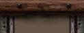

|  | |||||||
WANTED! is a total conversion of Valve Software's Half-Life produced by Maverick Developments in the United Kingdom. Wanted is a single player and a Multi Player game. For more information on Maverick Developments please follow the link to the Internet home-page "Maverick". To contact Maverick Developments by E-Mail please click "Mail Maverick" The theme of Wanted! is set in the American Wild West. It spans the Mountain Indian, Mexican villas and the Western town appearance. Wanted! is not designed to be representative of any specific period of the American Wild West. It is designed to be a fun, gaming experience in the style of the West in its total era. |
|||||||
|
| |||||||
|
|
|||||||
|
4
different settings to explore. Mountain, Mexican, Town, Mine
4 different races to battle. Indian, Mexican, Cowboy & Miner. Various animals such as, snakes, bears, pumas, scorpions 11 dedicated Deathmatch levels 5 Special "Capture the Chicken" levels 4 Special "High Noon" levels (Duel Mode) 13 period player weapons Period pick-up items and theme setting models Atmospheric sounds "Cow-Bots" (providing computer opponents) Over 500 appealing period style textures |
|||||||
|
|
|||||||
|
Documentation and Instructions |
|||||||
|
All Wanted!
files must be in a directory called wantedhl, this directory must be
within your Half-Life directory. Run Half-Life in the normal manner, select custom game from the main menu, activate Wanted!. Then either select the Training Ranch, New Game (to play the single player game) or select multiplayer and then select either a local lan based game or an internet game. Create or join a server in the standard Half-Life method. Game Styles There are 11
deathmatch levels. Using period weapons, players battle in combat
against each other. A complete free for all game play, set in various
Wild West themed locations, from Mexican plaster walled towns to
palisade protected forts. Weapons Some weapons have alternate fire options and/or special effect, these are noted below. Each weapon that requires it has its own specific ammunition. Knife: Pistol: Dual
Colts: Shotgun: Buffalo
Rifle: Bow: Gattling
Gun: Dynamite: Bear-trap: You can collect water bottles, Dr Daniels Elixir and the Stonewik herb to replenish health. Leather waistcoats add some protection from damage.
Cow-Bots and Server Instructions To set up, and play with bots, choose Multiplayer on the main menu. Then choose either LAN Game or Internet Game, depending on which type of game you want to host. Choose Create Game. Now click the Advanced Options button. The first page of settings is the same as in normal Half-life. Click the arrow facing right to go to the second page. This page contains the bot settings for Wanted!. They are: Number of bots – The initial number of bots that will always be placed in your game. Bot Difficulty – The starting difficulty for all bots. Auto-adjust bot difficulty – Checking this will allow the game to change the difficulty of the bots based on how well you play against them. If the game determines that they are too easy, it will raise the difficulty level automatically. If you are having trouble with them, the difficulty will be reduced. The change is very gradual, but if you do not want the bot difficulty to change while you play, uncheck this box. Bot commands (case sensitive): There are some commands you can use to control the bots while playing. These are available if you are hosting a non-dedicated server: addbot <number of bots> - Adds the specified number of bots to the server. removebot <number of bots> - Removes the specified number of bots from the server. sv_defaultbots <number of bots> - When each level loads, this many bots will automatically be placed in it. sv_botskill <skill level (0-100)> - Use this to change the bots’ difficulty while a game is running. When set lower, the bots are less responsive and inaccurate. When set higher, the bots will evade fire and be deadly accurate. The bots are "average" when this is set to about 50. sv_adjbotskill <value (1 or 0)> - Toggle whether the game should automatically adjust the bot difficulty to suit players in the game.
Running a
Wanted! server.
Credits Phil Daniels -
Director Additional textures Ted Anderson
|
|||||||